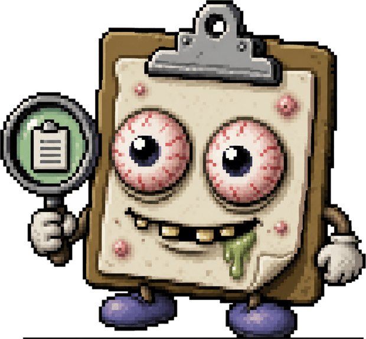

Observing clipboard specimen…
Clipboard Observation Instrument · for Windows
A modern clipboard analysis instrument. No, seriously.
Every format sitting on your clipboard — text, images, HTML, rich text,
file drops, audio, raw bytes — rendered live, with per-format zoom. The dignified
replacement for the old Windows clipbrd.exe.

Specimen · do not tap